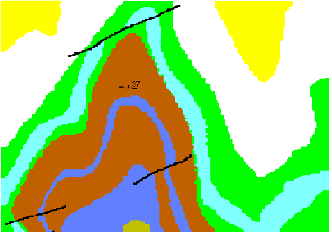
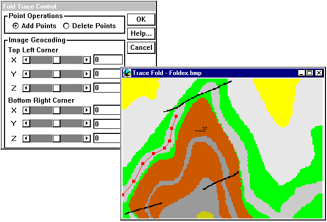
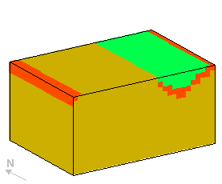
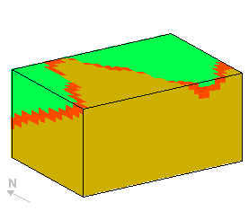
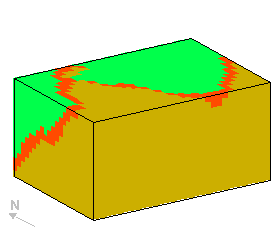

Tutorial 8: Digitising fold profiles
Exercise 8: Digitising information from maps into Noddy
This exercise demonstrates the ability to trace geological features directly from geological maps and sections or from geophysical images. In this example we will trace a fold profile and a fault position from a scanned geological map.
a) First of all load in a copy of the map, which is in .bmp format, by selecting Read Picture from the file menu, and choose the file foldex.bmp . This shows the area we will be modelling, and can be kept open as a reference.

b) In order to simplify the process, let us limit ourselves to a stratigraphy with just three layers, retaining just the pale blue layer as the marker layer. Use heights of 4500 and 5000 for the top and base of the middle (pale blue) layer.
c) To create a fold which matches the map we need to consider two pieces of information, the fold profile and the plunge of the fold. First let us create the fold, by placing a fold icon in the history window, and select to the Form/Scale group boxes.

d) Click on the Trace From Image... button, and select the foldex.bmp file again. You will now be presented with two windows: a Fold Trace Control window, that controls editing and the scaling of the window, and the Trace Fold window, which contains the image underlay. First type in the coordinates of the top left (0,7000,5000) and bottom right (10000,0,5000) of the image.

Next start digitising the fold profile using the light blue layer as a guide. Profile points will show up as red squares connected by red lines. (The profile will always project onto the X axis without overlaps, so if your profile did not, you would have to rotate the image prior to digitising). Extra points may be added as long as the Add Points control is set. To remove unwanted points select Delete Points and then click on the point you want to remove. Existing points may be moved around by dragging. Once you have finished the profile click OK in the Fold Trace Control window (don’t close the Trace Fold window!).
e) Now confirm that the profile looks OK by clicking on the Show Profile button, which allows further editing of the profile if desired. The amplitude and wavelength of the fold will be automatically calculated based on the map corner coordinates, however in our case the amplitude will have to be adjusted later, because the fold plunge has not yet been taken into account (or you can calculate the true amplitude now from the plunge according to true amplitude = apparent amplitude * cos (dip) ). You may observe the overall block geology by changing the preview to the History mode, or by making a block diagram, although you will probably find that not all of the folded layer fits in the block.

f) Now we will use the dip information from the fold hinge to tilt the entire block 37° around an east-west axis. You may observe the overall block geology by changing the preview to the History mode, or by making a block diagram.

g) Now we can add an event to model the fault which cuts the north end of the fold. Notice that the fault offsets the west limb of the fold but does not offset the right limb. These are several ways we can explain this in Noddy: with a elliptical fault (where the slip vector magnitude varies with position), with an oblique slip translational fault, or with a rotational fault (where both magnitude and orientation vary with position).
In either case we can use the Trace From Image... function to place the fault in the correct position and also with the correct orientation. With the Fault tracing option, only two points can be digitised, the first point provides the origin for the fault, and the second point controls the orientation. For elliptical and rotational faults the position of the first control point is therefore crucial, as it defines the centre of the ellipsoid and the rotation axis position respectively. If you are having trouble placing the fault, you can also use the Define XYZ position menu which appears when you create a Map view of the geology.
In the block below I have used an elliptical fault with a horizontal slip vector to achieve the variation in offset of the two limbs.

Noddy · open source under the MIT licence · Loop3D/noddy_qt